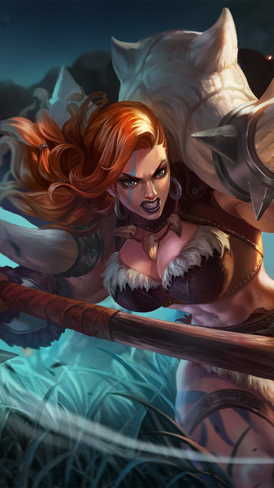

| THE WORST HEROES EVER | Yapathons |
|---|---|
| BRODY Brody is a marksman and that I absolutely HATE. He is COMPLETELY unbalanced being able to win his lane in the early game and do a STUPID amount of damage at late game, he does so much damage that you could even get a defensive item for one of your item slots instead of a damage item and still do enough damage to 2-shot the enemies marksman. This is one of the luxuries that Brody and only a few other marksmen have. PASSIVE: ABYSS CORROSION Brody's passive is the thing doing a lot for his damage, His basic attacks deal 140% of his total physical attack which means if you gave him an item like blade of despair (item that gives the highest physical attack in the game) which gives 160 attack paired with the weapon master emblem (+5% physical/magic power from any item and skill) he does a whopping 235 damage per basic attack. It might not sound like much but remember that this is just one item and he has 4 more item slots (with boots 5 more item slots without the boots) for even more damage or penetration if the enemies are tanks. Of course there's a trade-off for so much damage and that's the speed of his basic attacks, he has some pretty slow basic attacks compared to your normal marksmen. For each basic attack or skill from Brody the enemy gets an Abyss mark (up to 4) each stack giving brody 5% more damage to the target with the stacks and 5% movement speed. So if brody were to his a someone with 4 stacks of Abyss Mark + BOD + Weapon master emblem + his built in physical power (245 at levl 15) he gets 527 per basic attack, for reference a meta character like popol and kupa has 4385 hp at level 15 so if we don't count defence Brody can literally 8 hit popol kupa if we don't take account defence and the penetration of each character. SKILL 1: ABYSS IMPACT It's a long range skill that goes through enemies and walls, if it went through an enemy before hitting another enemy it gives +1 Abyys mark (e.g. three minions were infront of an enemy and you hit all three minions plus the enemy with your skill 1 giving the enemy 4 abyys marks instantly) SKILL 2: CORROSIVE STRIKE Brody dashes towards the enemy stunning them and then dashes back to the chosen direction, this gives 1 Abyys Mark. ULTIMATE: Torn-Apart Memory His ultimate has a long range as he shoots the enemy in his range, the less hp the enemy has the more damage it does and the ultimate uses up the Abyys Marks. The more Abyys Marks an enemy has the more shots are fired to them. |
|
| ESMERALDA Esmeralda is a strong late game hero but isn't really the strongest in the early game, she's part of the current meta which prioritizes heroes who can heal and sustain themselves vs. those who do a ton of damage but die really quickly PASSIVE: Starmoon Casket Esmeralda's passive is, like most heroes, bread and butter. Anytime she deals damage to enemies she will completely ignore the shield they have whether it was given to them by her, their teammates, or themself. She turns any shield the enemy has into her hp. SKILL 1:Frostmoon Shield She gains 750 +150% of her total magic power (at level 15) and a 40% movement speed bonus which decays over 4 seconds. In this state she turns the shield of any enemies into her own shield (capped at 50% of her max hp) which then turns into hp because of her passive. SKILL 2: Stardust Dance She does a little spin attack with her scarf dealing 440 +60 of her total physical attack (at level 15) and 550 +120 of her total magic power (at level 15). If this skill hits an enemy the cooldown of her Skill 1 is reduced by 1.5 seconds and if it hits creeps or minions it's only a 0.5 cooldown reduction, this attack also reduces the movement speed of the enemies by 10% for 1.5 seconds ULTIMATE: Falling Starmoon Hold the skill to aim and charge it and once you release it she jumps towards the targeted diraction dealing 650 +90% of her total physical attack (at level 15) and 650 +140% of her total magic power (at level 15) immobilizing the enemies hit for 1 second. |
|
| BRUNO> Bruno, half robot half human, his entire motif is around football using his powerful robotic legs to kick the football at mach 10 towards the enemy, just like Brody, he's one of the slower marksmen at attacking but does more damage per basic attacks in return. PASSIVE: Mecha Legs Bruno's passive is really easy to understand, he gets more Critical chance (2%) everytime he hits an enemy with a max stack of 10 meaning at max stack he gets 20% critical chance. He also trades for more damage in exchange for only gaining 80% of the attack speed from any and all equipment. SKILL 1: Volley Shot Using this skill enhances his next basic attack making it deal +100% of his total physical attack and slowing down the enemy by 30% for 0.5 seconds(not counting if they have tough boots). Once the enhanced basic attack hits the enemy it goes back to Bruno and if Bruno or his teammates touch it he can do another enhanced basic attack without needing to press the skill again. If you can time your first skill correctly you can have a 100% uptime on the powerball (his enhanced basic attack) but it's very tricky to pull off. SKILL 2: Flying Tackel From it's name, Bruno dashes towards the direction you aim it damaging (equal to 40% of his total physical attack) and stunning the enemy (for 0.5 seconds) and automatically bringing the powerball to him letting him do his enhanced basic attack again ULTIMATE: Worldie Bruno kicks a big ball towards the enemy hero (dealing 450 +83% of his total physical attack at level 15) knocking them back. It bounces between enemies for up to 10 times with every bounce dealing 270 +50% of his total physical attack, it also reduces the enemy's physical defense by 8% for 8 seconds going up to 3 stacks meaning if the ball hits the enemey 3 times we get a total of 24% physical penetration without any items at level 15. |
|
|  | HILDA I ABSOLUTELY HATE HER, DESPISE HER EVEN. I won't even bother with giving her skill description as she's just so disgustingly tanky and deals so much damage thanks to thunderbelt (gives 1 physical and magic defense per stack and each stack increases the true damage) which she can easily stack and deals true damage every 4 seconds to the enemy. Just build thunderbelt and stay in the bushes which heals her thanks to her passive and watch as you get a free win. |
| SUN Sun is based off the mythological dude named Sun Wukong, the monkey king is very strong in the late game with the help of his clones. PASSIVE: Simian God When sun or his clones hit an enemy the enemy's physical defence is reduced by 4% (which stacks up to 10 times) 40% physical defence reduction without any itmes. Sun also heals his hp equal to 50% of the clones physical attack each time they hit and deal damage to something SKILL 1 & 2: Endless Variety and Swift Exchange I bunched these two together as they kind of do the same thing, they summon a clone the only difference is that skill 2 is used as an escape tool or something to close your gap with the enemy as he throws his golden staff an wherever it stops is where he teleports to leaving a clone in his original direction. Meanwhile, the first skill is used to poke enemies where you throw your golden staff is where the clone will spawn in SKILL 3: Instantaneous Move Sun and his clones all hit the targetted enemy at the same time dealing 320 +40% of his total physical attack (at level 15), this skill is counted as a basic attack triggering any attack affects sun has but cannot crit. ULTIMATE: Clone Techniques Sun summons a clone that lasts for 12 seconds inheriting 70% of his attributes but 100% of his attack effects, the clone summoned by his ultimate takes more damage. Because of the animation he's invincible for a bit of time and paired with his first or second skill he can have a total of 2 clones at once. |